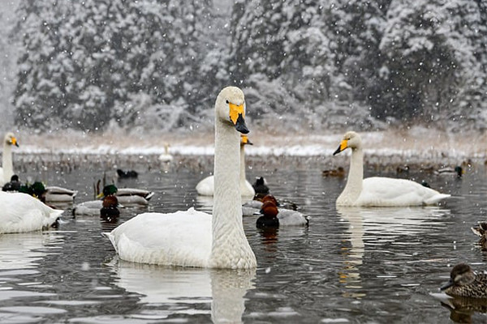

日本の冬
黒姫山は斑尾山、妙高山、戸隠山、飯綱山とともに北信五岳のひとつに数えられている山で、今から約17万年前ごろから火山活動を初め、4万年前ごろに現在の中央火口丘である小黒姫山(2,046m)を形成した。外輪山と中央火口丘の間には火口原が広がり七ツ池がある。南東方向より見た整った姿から信濃富士とも呼ばれている。 古くから信仰の対象とされ、黒姫というお姫様の悲話伝説（黒姫伝説）があり、山名の由来になったと言われている。冬季には黒姫高原スノーパークでスキーやスノーボードが楽しめる